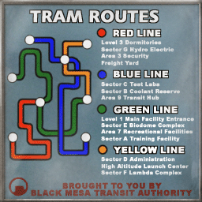

Heyo, I’m trying to figure out Black Mesa’s transit system as far as possible and, as a result, get a basic, reasonable layout of the whole facility.
Specifically, I’m looking for the following information:
- What sectors are in which areas / levels
- What lines connect what
- The positions of the sectors / areas relative to each other
I’ve already noclipped a great deal, gone through various wikis, looked up textures from all the HL games etc.
So I have a basic idea of how the obvious tram lines from HL1, BS and OP4 are connected.
Also, I have a major problem is this image:

After double-checking dozens of times, I just don’t see how it could be accurate. Has Gearbox simply goofed on that one and put all the POIs of Black Mesa on one map and randomly connected them?
How come the red line only shows two stations, yet lists 4 entries?
According to this chart, Gordon Freeman would’ve had to switch lines two times in order to get to Sector C.
If you guys happen to have other diagrams, charts, maps, overviews or anything that helps with getting a good overview, I’d really appreciate it. 
I do realize that in the end the BM map system is a bit messed up and has some overlaps or areas that don’t make much sense (referring to HL1 content).